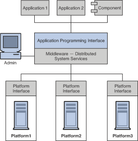
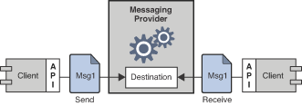
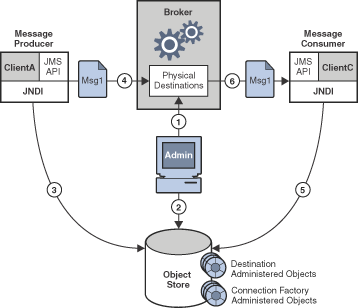

1 Messaging Systems: An Introduction
Open Message Queue is a leading business integration messaging system designed to provide exceptional reliability and scalability.
Message Queue is a messaging middleware product that implements the Java Message Service (JMS) standard. In addition, Message Queue provides enterprise-strength capabilities, including advanced integration, administration, security, and high-availability features.
Message Queue can be used as a stand-alone messaging service or it can be used as an enabling technology, deployed in a Java EE application server to provide asynchronous messaging. It is an integral enabling technology of the GlassFish Server software.
This chapter describes the messaging technology that underlies Message Queue and explains how Message Queue implements and extends the JMS specification. If you are familiar with the JMS specification, you can skip to the section of this chapter on Message Queue: Elements and Features. Otherwise, you should begin at the beginning.
The chapter covers the following topics:
Message-Oriented Middleware (MOM)
Because businesses, institutions, and technologies change continually, the software systems that serve them must be able to accommodate such changes. Following a merger, the addition of a service, or the expansion of available services, a business can ill afford to recreate its information systems. It is at this most critical point that it needs to integrate new components or to scale existing ones as efficiently as possible. The easiest way to integrate heterogeneous components is not to recreate them as homogeneous elements but to provide a layer that allows them to communicate despite their differences. This layer, called middleware, allows software components (applications, enterprise java beans, servlets, and other components) that have been developed independently and that run on different networked platforms to interact with one another. It is when this interaction is possible that the network can become the computer.
As shown in Figure 1-1, conceptually, middleware resides between the application layer and the platform layer (the operating system and underlying network services).

Applications distributed on different network nodes use the application interface to communicate without having to be concerned with the details of the operating environments that host other applications nor with the services that connect them to these applications. In addition, by providing an administrative interface, this new, virtual system of interconnected applications can be made reliable and secure. Its performance can be measured and tuned, and it can be scaled without losing function.
Middleware can be grouped into the following categories:
-
Remote Procedure Call or RPC-based middleware, which allows procedures in one application to call procedures in remote applications as if they were local calls. The middleware implements a linking mechanism that locates remote procedures and makes these transparently available to a caller. Traditionally, this type of middleware handled procedure-based programs; it now also includes object-based components.
-
Object Request Broker or ORB-based middleware, which enables an application’s objects to be distributed and shared across heterogeneous networks.
-
Message Oriented Middleware or MOM-based middleware, which allows distributed applications to communicate and exchange data by sending and receiving messages.
All these models make it possible for one software component to affect the behavior of another component over a network. They are different in that RPC- and ORB-based middleware create systems of tightly-coupled components, whereas MOM-based systems allow for a looser coupling of components. In an RPC- or ORB-based system, when one procedure calls another, it must wait for the called procedure to return before it can do anything else. In these synchronous messaging models, the middleware functions partly as a super-linker, locating the called procedure on a network and using network services to pass function or method parameters to the procedure and then to return results.
MOM-based systems allows communication to happen through the asynchronous exchange of messages, as shown in Figure 1-2.

Message Oriented Middleware makes use of messaging provider to mediate messaging operations. The basic elements of a MOM system are clients, messages, and the MOM provider, which includes an API and administrative tools. The MOM provider uses different architectures to route and deliver messages: it can use a centralized message server or it can distribute routing and delivery functions to each client machine. Some MOM products combine these two approaches.
Using a MOM system, a client makes an API call to send a message to a destination managed by the provider. The call invokes provider services to route and deliver the message. Once it has sent the message, the client can continue to do other work, confident that the provider retains the message until a receiving client retrieves it. The message-based model, coupled with the mediation of the provider, makes it possible to create a system of loosely-coupled components. Such a system can contin
One other advantage of having a messaging provider mediate messaging between clients is that by adding an administrative interface, you can monitor and tune performance. Client applications are thus effectively relieved of every problem except that of sending, receiving, and processing messages. It is up to the code that implements the MOM system and up to the administrator to resolve issues like interoperability, reliability, security, scalability, and performance.
So far we have described the advantages of connecting distributed components using message-oriented middleware. There are also disadvantages: one of them results from the loose coupling itself. With a synchronous messaging system, the calling function does not return until the called function has finished its task. In an asynchronous system, the calling client can continue to load work upon the recipient until the resources needed to handle this work are depleted and the called component fails. Of course, these conditions can be minimized or avoided by monitoring performance and adjusting message flow, but this is work that is not needed with a synchronous messaging system. The important thing is to understand the advantages and liabilities of each kind of system. Each system is appropriate for different kinds of tasks. Sometimes, you will need to combine the two kinds of systems to obtain the exact behavior you need.
Figure 1-3 shows the way a MOM system can enable communication between two synchronous messaging systems (for example, two RPC-based systems). The left side of the figure shows an application that distributes client, server, and data store components on different networked nodes for improved performance. This is a discount airline reservation system: an end user pays a fee to use this service, which allows it to find the lowest available fare for given destinations and times. The data store holds information about registered users and about airlines that participate in this program. Based on the user’s request, logic on the server queries participating airlines for prices, sorts through the information, and presents the three lowest bids to the user. The right side of the picture shows an RPC-based system that represents the ticket/reservation system for any one of the participating airlines. The right side of the picture would be replicated for as many airlines as the discounter is connected to. For each such airline, the data store would hold information about available flights (seating, flight times, and prices). The server component would update that information in response to data input by the end user. The airline server also subscribes to the MOM service, accepting requests for information from the discount reservation system and returning seating and pricing information. If a customer decides to purchase a discounted ticket on a PanWorld flight, the server component for that system would update the information in the data store and then either generate a ticket for the requester or send a message to the discounting service to generate the ticket.

This example illustrates some of the differences between RPC and MOM systems. The difference in the way in which distributed components are coupled has already been mentioned. Another difference is that while RPC systems are often used to distribute and connect client and server components in which the client component is directly accessed by an end-user, with MOM systems, client components are often heterogeneous software systems that can only interoperate by means of asynchronous messaging.
A more serious problem with MOM systems arises from the fact that MOMs are implemented as proprietary products. What happens when your company, which depends on SuperMOM-X acquires a company that uses SuperMOM-Y? To resolve this problem, a standard messaging interface is needed. If both SuperMOM-X and SuperMOM-Y implemented this interface, then applications developed to run on one system could also run on the other. Such an interface should be simple to learn but provide enough features to support sophisticated messaging applications. The Java Message Service (JMS) specification, introduced in 1998, aimed to do just that. The next section describes the basic features of JMS and explains how the standard was developed to embrace common elements of existing proprietary MOM products as well as to allow for differences and further growth.
JMS as a MOM Standard
The Java Messaging Service specification was originally developed to allow Java applications access to existing MOM systems. Since its introduction, it has been adopted by many existing MOM vendors and it has been implemented as an asynchronous messaging system in its own right.
In creating the JMS specification, its designers wanted to capture the following essential elements of existing messaging systems:
-
The concept of a messaging provider that routes and delivers messages
-
Support for reliable message delivery
-
Distinct messaging patterns or domains such as point-to-point messaging and publish/subscribe messaging
-
Facilities for pushing messages to message consumers (asynchronous receipt) and having them pulled by message consumers (synchronous receipt).
-
Common message formats such as stream, text, and byte
Vendors implement the JMS specification by supplying a JMS provider consisting of libraries that implement the JMS interfaces, of functionality for routing and delivering messages, and of administrative tools that manage, monitor, and tune the messaging service. Routing and delivery functions can be performed by a centralized message server, or they can be implemented through functionality that is part of each client’s runtime.
Equally, a JMS provider can play a variety of roles: it can be created as a stand-alone product or as an embedded component in a larger distributed runtime system. As a standalone product, it could be used to define the backbone of an enterprise application integration system; embedded in an application server, it could support inter-component messaging. For example, Java Platform, Enterprise Edition (Java EE) uses a JMS provider to implement message-driven beans and to allow EJB components to send and receive messages asynchronously.
To have created a standard that included all features of existing systems would have resulted in a system that was hard to learn and difficult to implement. Instead, JMS defined a least common denominator of messaging concepts and features. This resulted in a standard that is easy to learn and that maximizes the portability of JMS applications across JMS providers. It’s important to note that JMS is an API standard, not a protocol standard. Because all JMS clients implement the same interface, it is easy to port one vendor’s clinet to another vendor’s JMS provide implementation. But different JMS vendors typically cannot communicate directly with one another.
The next section describes the basic objects and messaging patterns defined by the JMS specification.
JMS Messaging Objects and Domains
In order to send or receive messages, a JMS client must first connect to a JMS message server (most often called a broker): the connection opens a channel of communication between the client and the broker. Next, the client must set up a session for creating, producing, and consuming messages. You can think of the session as a stream of messages defining a particular conversation between the client and the broker. The client itself is a message producer and/or a message consumer. The message producer sends a message to a destination that the broker manages. The message consumer accesses that destination to consume the message. The message includes a header, optional properties, and a body. The body holds the data; the header contains information the broker needs to route and manage the message; and the properties can be defined by client applications or by a provider to serve their own needs in processing messages. Connections, sessions, destinations, messages, producers, and consumers are the basic objects that make up a JMS application.
Using these basic objects, a client application can use two messaging patterns (or domains) to send and receive messages. These are shown in Figure 1-4.

Clients A and B are message producers, sending messages to clients C, D, E, and F by way of two different kinds of destinations.
-
Messaging between clients A, C, and D illustrates the point-to-point domain. Using this pattern, a client sends a message to a queue destination from which only one receiver may get it. No other receiver accessing that destination can get that specific message.
-
Messaging between clients B, E, and F illustrates the publish/subscribe domain. Using this broadcast pattern, a client sends a message to a topic destination from which any number of consuming subscribers can retrieve it. Each subscriber gets its own copy of the message.
Message consumers in either domain can choose to receive messages synchronously or asynchronously. Synchronous consumers make an explicit call to retrieve a message; asynchronous consumers specify a callback method that is invoked to pass a pending message. Consumers can also filter out messages by specifying selection criteria for incoming messages.
Administered Objects
The JMS specification created a standard that combined many elements of existing MOM systems without attempting to exhaust all possibilities. Rather, it sought to set up an extensible scheme that could accommodate differences and future growth. JMS leaves a number of messaging elements up to the individual JMS providers to define and implement. These include load balancing, standard error messages, administrative APIs, security, the underlying wire protocols, and message stores. The next section, Message Queue: Elements and Features describes how Message Queue implements many of these elements and how it extends the JMS specification.
Two messaging elements that the JMS specification does not completely define are connection factories and destinations. Although these are fundamental elements in the JMS programming model, there were so many existing and anticipated differences in the ways providers define and manage these objects, that it was neither possible nor desirable to create a common definition. Therefore, these two provider-specific objects, rather than being created programmatically, are normally created and configured using administration tools. They are then stored in an object store, and accessed by a JMS client through standard Java Naming and Directory Interface (JNDI) lookups.
-
Connection factory administered objects are used to generate a client’s connections to the broker. They encapsulate provider-specific information that governs certain aspects of messaging behavior: connection handling, client identification, message header overrides, reliability, and flow control, and so on. Every connection derived from a given connection factory exhibits the behavior configured for that factory.
-
Destination administered objects are used to reference physical destinations on the broker. They encapsulate provider-specific naming (address-syntax) conventions and they specify the messaging domain within which the destination is used: point-to-point (queue destination) or publish/subscribe (topic destination).
JMS clients, however, are not required to look up administered objects; they can create these objects programmatically. For quick prototyping, creating these objects programmatically might be easiest. But for deployment in a production environment, looking up administered objects in a central repository makes it much easier to control and manage messaging behavior throughout the system:
-
By using administered objects for connection factory objects, administrators can tune messaging performance by reconfiguring these objects. Performance can be improved without having to recode client applications.
-
By using administered objects for physical destinations, administrators can control the proliferation of these destinations (which can be auto-created) on the broker by requiring clients to access only preconfigured destination objects.
-
Administered objects shield client developers from provider-specific implementation details and allow the code they develop for one provider to be portable to other providers with little or no change.
The use of administered objects completes the set of elements in a JMS application system, as shown in Figure 1-5.

Figure 1-5 shows how a message producer and a message consumer use destination administered objects to access the physical destination to which they correspond. The marked steps denote the actions that need to be taken by the administrator and by the client applications to send and receive messages using this mechanism:
-
The administrator creates a physical destination on the broker.
-
The administrator creates a destination administered object and configures it by specifying the name of the physical destination to which it corresponds and its type: queue or topic.
-
The message producer uses a JNDI call to look up the destination administered object that points to the corresponding physical destination.
-
The message producer sends a message to the physical destination.
-
The message consumer uses a JNDI call to look up the destination administered object that points to the corresponding physical destination from which it expects to get messages.
-
The message consumer gets the message from the physical destination.
The process of using connection factory administered objects is similar. The administrator creates and configures a connection factory administered object using administration tools. The client looks up the connection factory object and uses it to create a connection.
Although the use of administered objects adds a couple of steps to the messaging process, it also adds robustness and portability to messaging applications.
Message Queue: Elements and Features
So far we have described the elements of message-oriented middleware and the use of JMS as a way of adding portability to MOM applications. It now remains to describe how Message Queue implements the JMS specification and to introduce the features and tools it uses to provide reliable, secure, and scalable messaging services.
First, like many JMS providers, Message Queue can be used as a stand-alone product or it can be used as an enabling technology, embedded in a Java EE application server to provide asynchronous messaging. Message Queue and Java EE describes the role Message Queue plays in Java EE in greater detail. Unlike other JMS providers, Message Queue has been designated as the JMS reference implementation. This designation attests to the fact that Message Queue is a correct and complete JMS implementation. It also guarantees that the Message Queue product will remain current with any future JMS revisions and extensions.
This section covers the following topics:
The Message Queue Service
As a JMS provider, Message Queue offers a message service that implements the JMS interfaces and that also provides administrative management and control. So far, in illustrating JMS providers, the focus has been mainly on the role of a broker in delivering messages. But in fact, a JMS provider must include many additional elements to provide reliable, secure, and scalable messaging. Figure 1-6 shows the elements that make up the Message Queue message service (the shaded elements in the figure).

As you can see, a full-featured JMS provider is more complex than the basic JMS model might lead one to suspect. The following sections introduce the elements of the Message Queue service shown in Figure 1-6:
The Broker
At the heart of the message service is the broker, which routes and delivers messages reliably, authenticates users, and gathers data for monitoring performance.
-
To establish connections to both application clients and administration clients, the broker supports a number of connection services layered on top of several wire protocols.
-
To route and deliver messages, the broker places incoming messages in their respective destinations and manages message flow into and out of these destinations.
-
To provide reliable delivery, the broker uses a persistent data store to save state information and persistent messages until they are consumed. Should the broker or the connection fail, the saved information allows the broker to restore the broker’s state and to resume operations.
-
To provide security for the data being exchanged the broker uses authenticated connections. Optionally data may be encrypted by running over a secure protocol like SSL. The broker also uses and manages a repository that holds information about users and the data or operations they can access. The broker authenticates users who are requesting services and authorizes the operations they want to carry out by looking up information in this repository.
-
To monitor the system, the broker generates metrics and diagnostic information that an administrator can access to measure performance and to tune the broker. Metrics information is also available programmatically to allow applications or administrators to adjust message flow and patterns to improve performance.
The Message Queue service provides a variety of administrative tools that the administrator can use to configure broker support. For more information, see Built-in Administration Tools.
Client Runtime Support
Client runtime support is provided in libraries that you use when building and running Message Queue clients. You can think of the client runtime as the part of the Message Queue service that enables the client. For example, when client code makes an API call to send a message, code in these libraries is invoked that packages the message bits appropriately for the protocol that will be used to relay the message to a physical destination on the broker.
Java and C Client Support
A JMS provider is only required to support Java clients; however, as Figure 1-6 shows, a Message Queue client can use either the Java API or a proprietary C API to send or receive a message. These interfaces are implemented in Java or C runtime libraries, which do the actual work of creating connections to the broker and packaging the bits appropriately for the connection service being used.
-
The Java client runtime supplies Java clients with the objects needed to interact with the broker. These objects include connections, sessions, messages, message producers, and message consumers.
-
The C client runtime supplies C clients with the functions and structures needed to interact with the broker. It supports a procedural version of the JMS programming model. C clients cannot use JNDI to access administered objects, but can create connection factories and destinations programmatically. Message Queue provides the C API to enable legacy C and C++ applications to participate in JMS-based messaging.
There are a number of differences in the functionality provided by these two APIs; these are documented in Java and C Clients.
It is important to remember that the JMS specification is a standard for Java clients only. C support is specific to the Message Queue provider and should not be used in client applications that you plan to port to other providers.
Support for SOAP Messages
SOAP (Simple Object Access Protocol) allows the exchange of structured data between two peers in a distributed environment. The data exchanged is specified by an XML schema. SOAP message delivery is limited to using the point-to-point domain and does not by itself guarantee reliability.
However, Message Queue Java clients are able to send and receive SOAP messages, encapsulated as JMS messages. By encapsulating a SOAP message in a JMS message and delivering it using the broker, you can take advantage of full featured Message Queue messaging, which guarantees reliable delivery and also allows you to use the publish/subscribe domain. Message Queue provides utility routines that a message producer can use to encapsulate a SOAP message as a JMS message and that a message consumer can use to extract a SOAP message from the JMS message. Message Queue also provides XML schema validation of the encapsulated XML message.
Working with SOAP Messages gives you a more detailed view of SOAP message processing.
Universal Message Service (UMS)
The Universal Messaging Service (UMS) and its messaging API provides access to Message Queue from any http-enabled device. As a result, almost any application can communicate with any other application and benefit from the reliability and guaranteed delivery of the Message Queue service.
The UMS, which runs in a web server, is language neutral and platform independent. The UMS serves as a gateway between any non-JMS client application and Message Queue. It receives messages sent using the UMS API, transforms them into JMS messages, and produces them to destinations in the Message Queue broker by way of the broker’s connection services. Similarly, it retrieves messages from destinations in the broker, transforms them into text or SOAP messages, and sends the messages to non-JMS clients as requested by the clients through the UMS API.
The simple, language-independent, protocol-based UMS API supports both Web-based and non-Web-based applications, and can be used with both scripting and programming languages. The API is offered in two styles: a simple messaging API that uses a Representational State Transfer (REST)-style protocol, and an XML messaging API that embeds the protocol in a SOAP message header. In both cases, however, the API requires only a single http request to send or receive a message.
The simplicity and flexibility of the UMS API means that AJAX, .NET, Python, Ruby, C, Java, and many other applications can send text message and/or SOAP (with attachment) messages to JMS destinations or receive messages from JMS destinations. For example, Python applications can communicate with .NET applications, iPhone can communicate with Java applications, and so forth.
Administration
The Message Queue service offers command line tools that you can use to do the following:
-
Start and configure the broker.
-
Create and manage destinations, manage broker connections, and manage broker resources.
-
Add, list, update, and deleted administered objects in a JNDI object store.
-
Populate and manage a file-based user repository.
-
Create and manage a JDBC compliant database for persistent storage.
You can also use a GUI-based administration console to perform the following command-line functions:
-
Connect to a broker and manage it.
-
Create and manage physical destinations.
-
Connect to an object store, add objects to the store, and manage them.
In addition, to these built-in administration tools, Message Queue also supports the Java Management Extensions (JMX) specification for configuring and monitoring brokers, destinations, connection services, and so forth. Using the JMX Administration API, you can perform these administration functions programmatically from within a Java application.
Broker Clusters: Scalability and Availability
Message Queue brokers can be connected into a broker cluster: a set of brokers that work collectively to perform message delivery between message producers and consumers. Broker clusters add scalability and availability to the Message Queue service, as described briefly in the following sections:
For additional information on broker clusters, see Broker Clusters
Message Service Scalability
As the number of clients or the number of connections grows, you might need to scale a message service to eliminate bottlenecks or to improve performance. In general, you can scale a message service both vertically (increasing the number of client applications that are supported by a single broker) and horizontally (distributing client applications among a number of interconnected brokers).
Vertical scaling usually requires adding more processing power for a broker and by expanding available resources. You can do this by adding more processors or memory, by switching to a shared thread model, or by running the Java VM in 64 bit mode.
Horizontal scaling is generally achieved using a broker cluster. While it is possible to scale horizontally by simply redistributing clients among additional brokers that are not in a cluster, this approach is appropriate only if your messaging operations can be divided into independent work groups. However, if producer clients must produce messages to be consumed by consumer clients connected to remote brokers, then brokers must work collectively, as part of a broker cluster, to achieve horizontal scaling.
In a broker cluster, each broker is connected to every other broker in the cluster. Brokers can reside on the same host, but more often are distributed across a network. Each broker can route messages from producers to which it is directly connected to consumers that are connected to remote brokers in the cluster.
|
Note
|
If you are using the point-to-point domain, you can scale the consumer side by allowing multiple consumers to access a queue. This is a Message Queue feature (the JMS specification defines messaging behavior in the case of only one consumer accessing a queue). When multiple consumers access a queue, the load-balancing among them takes into account each consumer’s capacity and message processing rate. |
Message Service Availability
In addition to providing for message service scalability, broker clusters also provide for message service availability. If one broker in a cluster fails, then other brokers in the cluster are available to continue to provide messaging services to client applications.
Message Queue supports two clustering models that provide different degrees of availability:
-
Conventional broker clusters. A conventional broker cluster provides message service availability. When a broker or a connection fails, clients connected to the failed broker reconnect to another broker in the cluster. However, messages and state information stored in the failed broker cannot be recovered until the failed broker is brought back online. This can result in an interruption of message delivery.
-
Enhanced broker clusters. An enhanced broker cluster provides data availability in addition to message service availability. When a broker or a connection fails, another broker takes over the pending work of the failed broker. The failover broker has access to the failed broker’s messages and state information. Clients connected to the failed broker reconnect to the failover broker. In an enhanced cluster, as compared to a conventional cluster, a failure results in no interruption of message delivery.
|
Note
|
You can also achieve data availability in a conventional cluster by using Solaris Cluster software. Solaris Cluster software replicates broker data and provides for a hot standby broker to take over the pending work of a failed broker. For details, see the documentation for the Solaris Cluster Data Service Agent for Message Queue. |
Message Queue as an Enabling Technology
The Java Platform, Enterprise Edition (Java EE) is a specification for a distributed component model in a Java programming environment. One of the requirements of the Java EE platform is that distributed components be able to interact with one another through reliable, asynchronous message exchange. This capacity is furnished by a JMS provider, which can play two roles: it can be used to provide a service and it can support message-driven beans (MDB), a specialized type of Enterprise Java Bean (EJB) component that can consume JMS message.
A Java EE-compliant application server must use a resource adapter furnished by a given JMS provider to use the functionality of that provider. Message Queue provides such a resource adapter. Using the support of a plugged in JMS provider, Java EE components, including MDBs, deployed and running in the application server environment can exchange JMS messages among themselves and with external JMS components. This provides a powerful integration capability for distributed components.
For information on the Message Queue resource adapter, see Message Queue and Java EE
Message Queue Feature Summary
Message Queue has capabilities and features that far exceed the requirements of the JMS specification and JMS API. These features enable Message Queue to integrate systems consisting of large numbers of distributed components exchanging many thousands of messages in round-the-clock, mission-critical operations.
The following enterprise-strength features, which are listed alphabetically in Message Queue Features, can be divided into the quality-of-service categories below:
Integration Support
-
Multiple connection services, including HTTP connections and secure connections
-
Java EE resource adapters
-
SOAP support
-
Schema validation of XML messages
-
C client support, including support for distributed transactions
-
LDAP server support
Security
-
Authentication
-
Authorization, including JAAS-based authentication
-
Secure connections, including encryption
Scalability
-
Broker clusters
-
Queue delivery to multiple consumers
-
Thread management
-
Multiple destinations for a publishers or subscriber
Availability
-
Broker clusters, including conventional clusters and enhanced clusters
-
Connection ping for health checks
-
Automatic reconnect
-
Connection event notification
Performance
-
Tunable performance
-
Memory resource management
-
Message flow control
-
Configurable physical destinations
-
Message compression
Serviceability
-
Administration tools
-
Message-based monitoring API
-
JMX-based administration
-
Java ES Monitoring Framework support
-
Client runtime logging
-
Dead message queue
-
Broker configurations
-
Configurable persistence